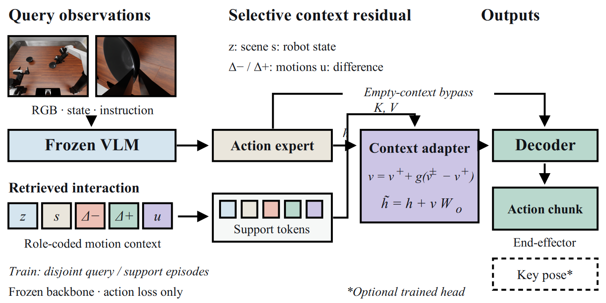

METHOD / 2026.11.04
从一次执行，到下一次行动
机器人经验的价值，落在下一次动作里。KIM 将交互中的场景、运动与结果转化为冻结 VLA 可以使用的上下文。
01 / 经验是一段有结果的交互
通用机器人策略把视觉、语言与机器人状态映射为动作。部署后，每次执行又产生新的信息：机器人尝试了什么运动、实际到达什么状态、目标是否完成。这些记录为下一次决策提供与当前场景紧密相连的上下文。
KIM 以交互记录作为连接点。检索式分支保存场景、机器人状态、成功运动、失败运动及其差异；历史条件分支读取已完成尝试中的指令运动与实测运动。两者分别对应“相关经验如何指导当前动作”和“上一次执行如何指导下一次尝试”。
当前观察与任务指令 → 冻结策略的动作提议
相关交互经验 → 上下文表示／纠正残差
两条信息路径共同进入可执行的动作输出。
02 / 检索式上下文适配：在动作特征中使用经验
检索式分支先按照任务指令匹配候选经验，再用视觉相似度排序，最多取三组来源独立的支持样本。每组经验将场景、状态和运动关系编码为支持 tokens，与当前动作特征进行注意力交互。
适配器共享注意力模块读取成功经验与完整配对经验，再通过门控调节两者之间的增量。上下文残差加入动作专家特征，原有解码器输出连续动作块。这一接口让底座保持冻结，将学习集中在经验如何参与控制的轻量模块。

公开 LIBERO 与 LIBERO-Plus 面板采用冻结 X-VLA、同一特征适配器与 22 条训练记忆。三种输入条件分别关闭上下文、提供成功上下文、提供完整交互上下文。评测期间记忆和参数固定，使同一任务下的输入条件可以直接配对。
03 / 历史条件配对纠错：学习具体的动作调整
历史条件分支把完成一次尝试后得到的运动信息用于重试。首先由指令运动和实测运动估计执行误差，再让学习模块预测有界修正。配对目标把监督落在所需的纠正量上，与直接预测绝对动作的目标形成匹配比较。
在 31 个任务、248 个新布局的独立评测中，配对目标与真实历史条件在两次执行内完成 718 / 744 组任务，成功率为 96.51%。相同预算下，绝对目标条件完成 683 组；配对目标增加 35 次成功，对应 4.70 个百分点。评测还包含执行误差补偿、等长度错配历史与常量上下文，完整数据在结果页逐行展示。
| 路径 | 经验来源 | 作用位置 | 对应评测 |
|---|---|---|---|
| 检索式适配 | 跨记录成功／失败运动 | 动作专家特征 | LIBERO、LIBERO-Plus |
| 历史条件纠错 | 同一案例的已完成尝试 | 动作修正 | 新布局下的匹配重试 |
04 / 让结果与动作过程连接起来
研究看板从三个尺度呈现 KIM：完整目录结果给出任务覆盖，匹配对照呈现不同机制与目标的表现，原始录屏展示一次动作如何展开。视频采用仿真外部相机和腕部相机双视角，可展开相同布局的首次尝试；样本浏览器进一步提供起始、中段与结束帧。
接下来的工作连接双臂数据、跨轮经验积累与真实机器人。当前看板将这些阶段与已完成的实验面板并列组织，持续更新从数据到模型、从执行到经验的研究进展。